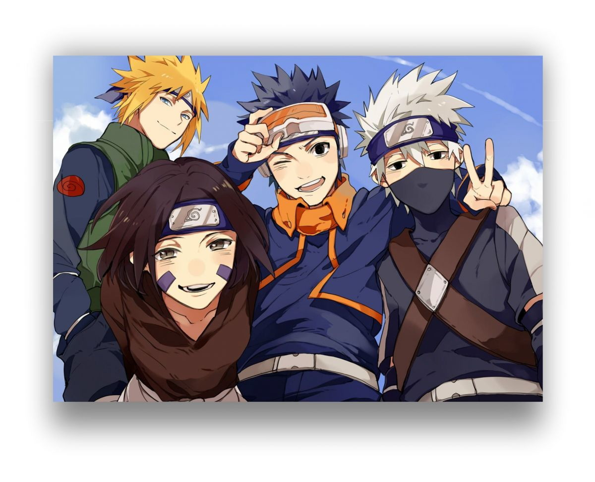

Qual a origem da Vila da Folha?
Antes da formação das vilas ninja, houve um período na história do universo de Naruto conhecido como Era dos Estados Combatentes. Naquele tempo, os países do mundo eram pequenos e viviam em conflito, sempre disputando terras e recursos. Para isso, eles contratavam clãs de ninjas, que lutavam para quem quer que pagasse mais. Assim, a vida dos shinobi se resumia a guerras, fazendo com que a maioria deles sequer vivesse mais que 30 anos. Muitas crianças sequer chegavam a se tornar adultos de fato, tendo que lutar desde a infância.
Entre os múltiplos clãs shinobi, dois se tornaram extremamente mais forte que os outros: os Senju e os Uchiha. É contado que, sempre que um lado de uma guerra contratava um dos dois, seu oponente contratava o outro, o que os levou a se enfrentarem inúmeras vezes e desenvolverem uma inimizade que só teve fim por meio de Hashirama Senju e Madara Uchiha.
A dupla formou uma profunda amizade durante a infância, que estabeleceu a base para que, já adultos, os dois fizessem uma trégua quando se tornaram os líderes de seus respectivos clãs. Desde o princípio, eles compartilhavam o sonho de viver em um mundo melhor, onde toda a guerra não existisse e crianças não tivessem que lutar. Com a trégua, os dois tomaram o primeiro passo para tornar isso possível, estabelecendo uma vila onde as coisas seriam diferentes para os shinobi.
Além dos Senju e dos Uchiha, os clãs afiliados a eles, como os Hyuga e os Sarutobi também se juntaram à vila. Foi assim que Konohagakure, a Vila Oculta da Folha, teve sua origem, sendo a primeira vila shinobi a ser formada. Depois disso, outros ninjas seguiram esse exemplo, formando mais vilas e levando ao fim da Era dos Estados combatentes.

Como era a vila da folha antes de Naruto?
As intenções de Madara e Hashirama não se concretizaram como eles pretendiam. Além das desavenças entre os dois, que levaram à batalha no Vale do Fim, a paz gerada pelo surgimento das vilas ninja não foi duradoura. Durante sua vida, o Primeiro Hokage tentou mantê-la e acabar com a Primeira Guerra Ninja ao capturar a maior parte das Bestas com Caudas e vendê-las para outras vilas. Essa ação garantiu a paz por algum tempo, mas não foi o suficiente para acabar com a guerra.
Após a morte de Hashirama, Tobirama Senju se tornou o Segundo Hokage. Ainda assim, ele encontrou seu fim ainda durante a Primeira Guerra, escolhendo Hiruzen Sarutobi como seu sucessor pouco antes. O Terceiro Hokage viu o fim deste conflito, mas esteve presente e liderou sua vila durante a Segunda Guerra Ninja, lutando contra a Vila da Pedra e a Vila da Areia. Por causa da localização de cada vila, grande parte da guerra foi travada na Vila da Chuva, que acabou se envolvendo no conflito por causa disso. Foi durante essa guerra que Hanzō, líder da vila onde os confrontos estavam ocorrendo, declarou Tsunade, Jiraiya e Orochimaru como os Sannin Lendários da Folha.
Konoha saiu vitoriosa do confronto, mas se envolveu em mais um conflito com a chegada da Terceira Guerra Mundial Ninja. Desta vez, a Folha e a Pedra voltaram a se enfrentar, passando pela Vila da Grama para isso. Apesar de quase derrotados, Minato Namikaze e sua equipe acabaram conseguindo virar o jogo, garantindo que a vila saísse vitoriosa mais uma vez.
Com isso, Minato se tornou o Quarto Hokage quando Hiruzen escolheu se aposentar, devido a grande pressão que estava sofrendo pelas ações na Terceira Grande Guerra. Ainda que outra Guerra Mundial tenha demorado a acontecer, a vila não teve muito tempo de paz. Um homem mascarado atacou a família do Hokage quando sua esposa, Kushina, deu a luz ao filho deles, Naruto. Seu objetivo era capturar a Raposa de Nove Caudas e usá-la contra a Vila da Folha, algo que ele consegue fazer. Apesar de os pais do protagonista conseguirem derrotar o ninja misterioso e conter a Raposa novamente, ambos sacrificam suas vidas para isso. Muitos outros habitantes de Konoha deram suas vidas para defendê-la do ataque, motivo pelo qual se ressentiam de Naruto por ser o jinchuriki da criatura.
Depois disso Hiruzen volta da aposentadoria e se torna novamente o Hokage, e a vila tem novos problemas, agora com a Vila da Nuvem. Cerca de nove anos antes do início da série, as duas nações ninja estavam à beira de mais uma guerra, mas tentaram resolver o assunto pacificamente, assinando um tratado de paz. Para isso, um ninja da Nuvem foi enviado à outra vila, mas suas reais intenções não tinham a ver com a paz. O real objetivo dele era capturar Hinata, ainda uma criança pequena, visando obter o Byakugan e seus segredos. A tentativa, no entanto, falhou, e o ninja acabou sendo morto por Hiashi, pai da menina.
Por fim, o último grande acontecimento na história do local que ocorreu antes do que acompanhamos na série foi o massacre do clã Uchiha. Os shinobi do clã estavam sendo isolados da liderança da vila, pois os outros líderes acreditavam que o ataque da Nove Caudas havia sido causado por eles. Indignados com a situação, os Uchiha começaram a planejar um golpe de estado, visando tomar a Vila da Folha para si. Eles foram impedidos por Itachi, que com o auxílio de Tobi, exterminou quase toda a família, deixando apenas Sasuke.